Buddy++拥有非常简洁的界面，我们把常用的功能设计为图形化的一级菜单，从而简化了官方IDE的多级文本菜单。
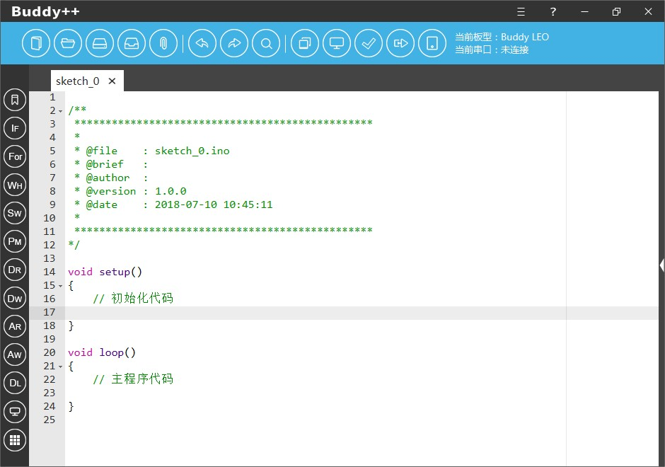
界面整体分为四大部分，一是上方的基础功能菜单、二是左侧的扩展功能菜单、三是位于中央的代码编辑器、四是位于右侧的可扩展信息栏。
基础功能菜单位于界面上方蓝色部分，其包括文件操作、编辑选项及编译烧录三个板块：
1、文件操作板块
文件的创建
Buddy++提供最基础的源码文件处理，其中包括源码文件的创建、保存和关闭。在进行编码之前我们首先需要创建一个源码文件，在启动Buddy++的时候程序已经默认为开发者创建了一个源码文件。
如果开发者需要同时编辑两个源码文件，点击“新建”按钮，程序将会创建一个标签页面，点击相应的标签即可切换当前的源码文件，如果要关闭当前的源码文件点击标签上的“交叉”按钮即可。
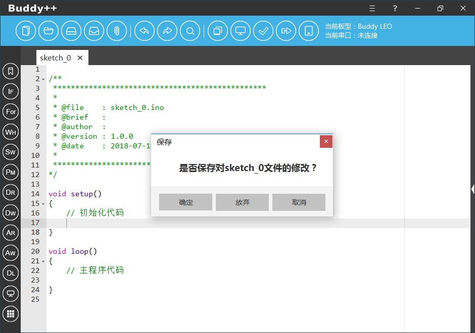
如果代码编辑区只有一个标签页面，当关闭这个标签的时候Buddy++主程序也将会被关闭，如果当前源码文件未保存，程序将会弹出提示框咨询是否保存当前文件，如果不保存可点击“放弃”按钮，如果选择保存则需要指定保存的路径。
如果开发者要保存当前编辑的源码文件，点击主界面顶端菜单的“保存”按钮即可，如果文件是第一次保存则需要指定文件的保存路径，否则文件将保存在默认的路径。
新版本的Buddy++支持文件拖入操作，例如您希望Buddy++打开计算机桌面的某个源码文件，您仅需要点击选中该文件并把它拖入至代码编辑区，Buddy++将会自动新建一个代码标签页并把该文件的内容导入。
Buddy++为入门开发者提供了丰富的基础案例，其中包括针对面包板电路的基础案例，也包含以模块化为基础的开发案例。
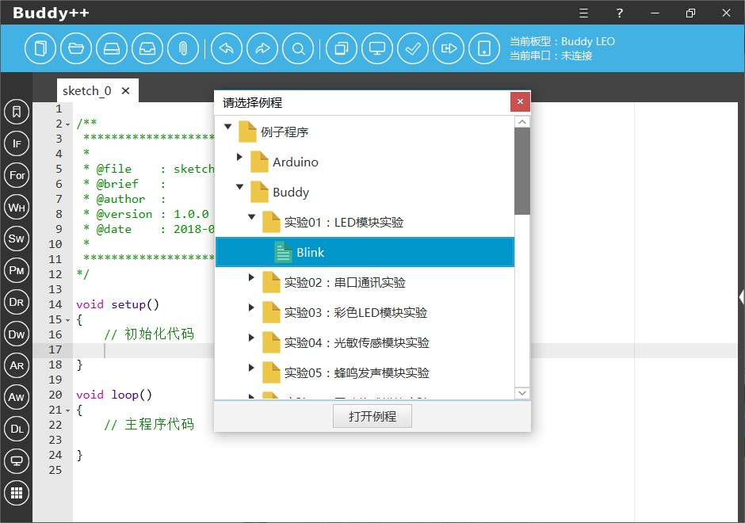
点击界面上方功能菜单中的“例子”按钮，开发者可以在弹出的窗口中选择所需参考的示例工程，选择无误后点击“打开例程”按钮即可。导入例程后开发者可以按需要修改源码内容，从而提高开发效率。
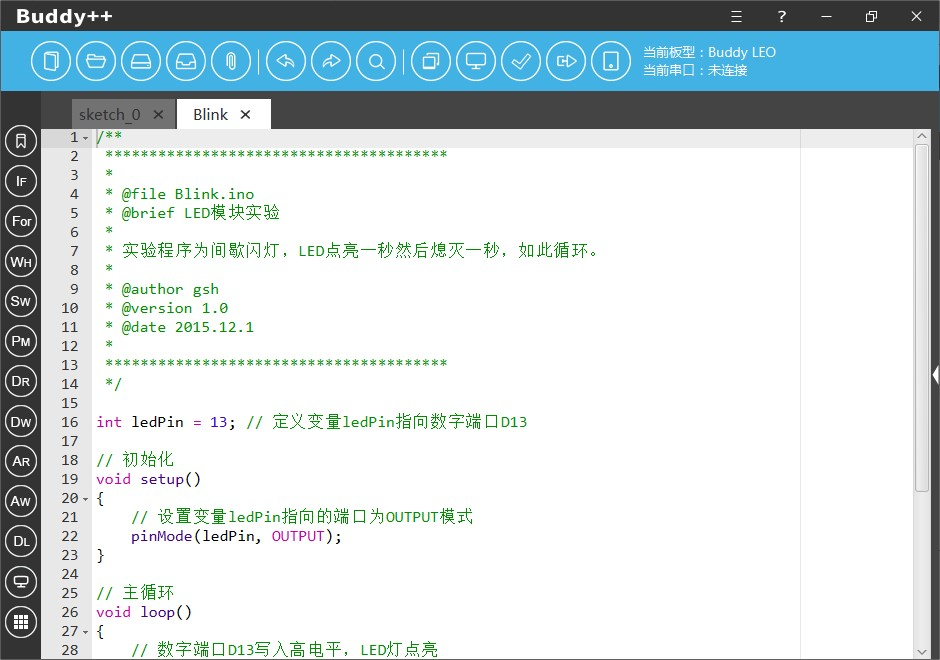
Buddy++顶端主菜单支持代码编辑区最为基础和最为常用的编辑功能，其中包括重复（Redo）、恢复（Undo）和搜索（Serach）。
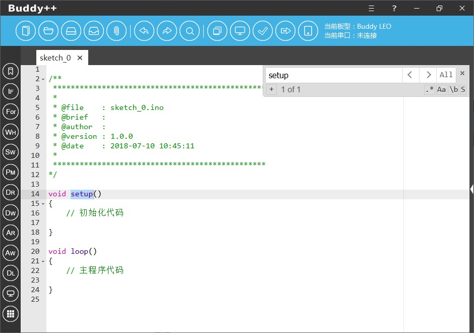
搜索功能提供基础的筛选搜索选项，开发者可以输入关键词并选择“大小写区分”、“顺序/反向”等子选项以满足搜索操作。
当项目开发涉及较高级的功能或需要使用第三方模块，这时一般需要引入第三方的库文件，Buddy++为开发者提供方便快捷的开发库引入功能，通过简单的选择开发者就可以完成操作。
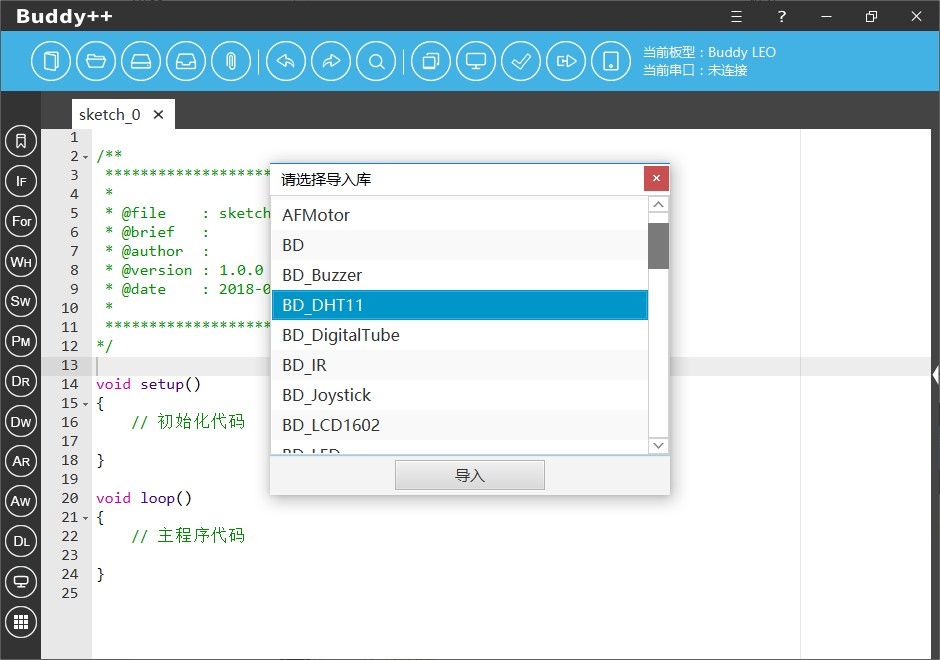
点击界面上方功能菜单中的“添加库”按钮，开发者可以在弹出的窗口中选择所需导入的库文件。
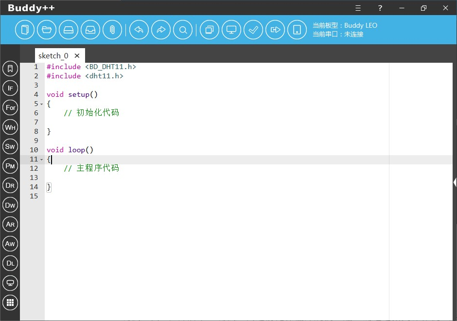
与Arduino官方提供的IDE一样，Buddy++为开发者提供基础的串口通讯与调试工具。在开启串口调试工具之前先保证主控板已经正确地连接到计算机，并且已经正确地进行了预设置（正确地选择主控板型号和串口序号），否则在开启工具的时候将会弹出提示框。
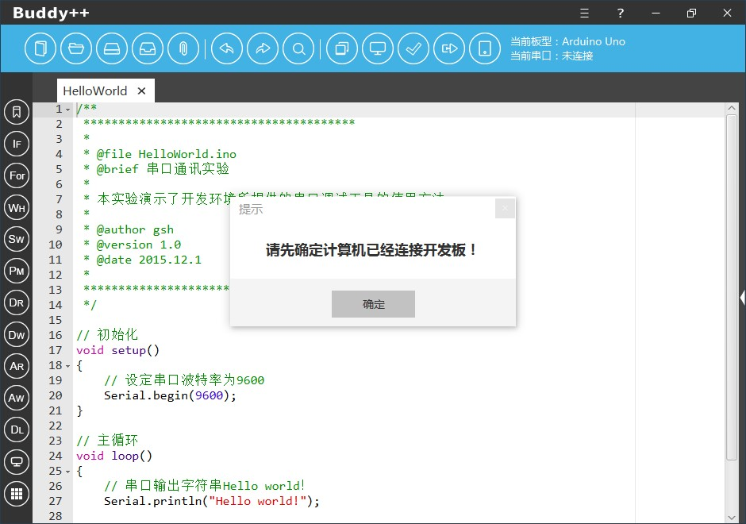
在进行串口通讯之前，开发者还需要正确地选择通讯波特率，开发者还可以根据实际需求选择显示设置。
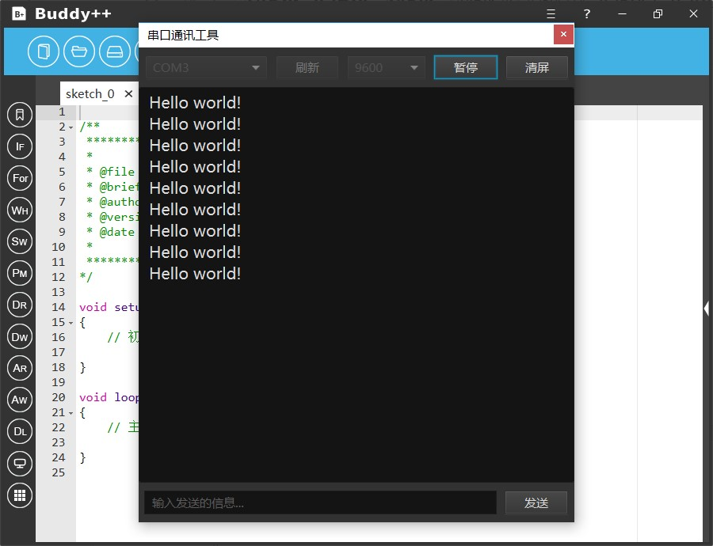
当开发者完成了源码的编辑，接下来就是要进行程序的编译与烧录，点击“编译”按钮，程序将会开始编译操作操作，此时右侧的信息栏将会自动展开并激活控制台标签页。
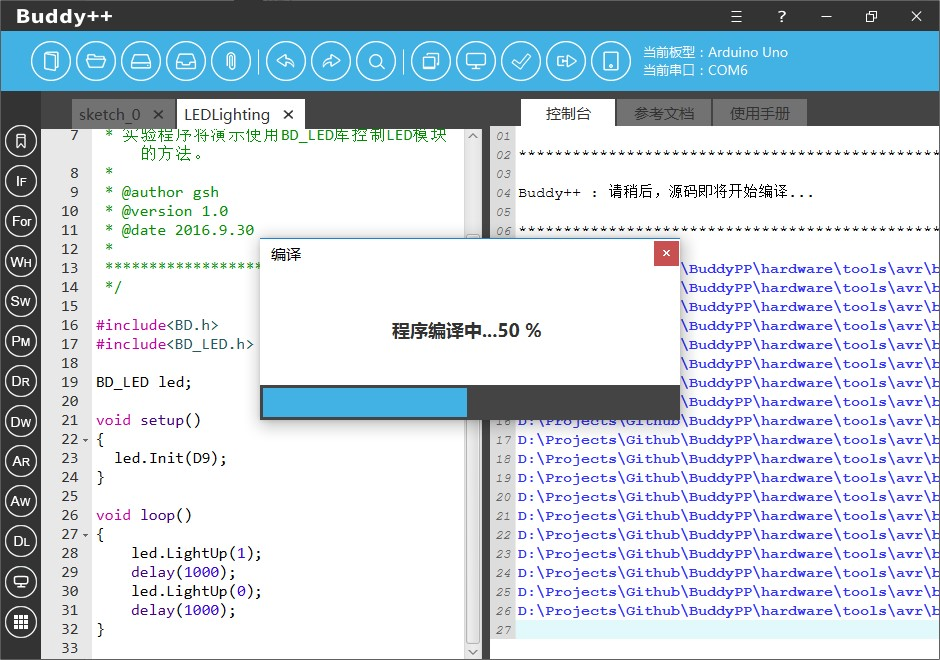
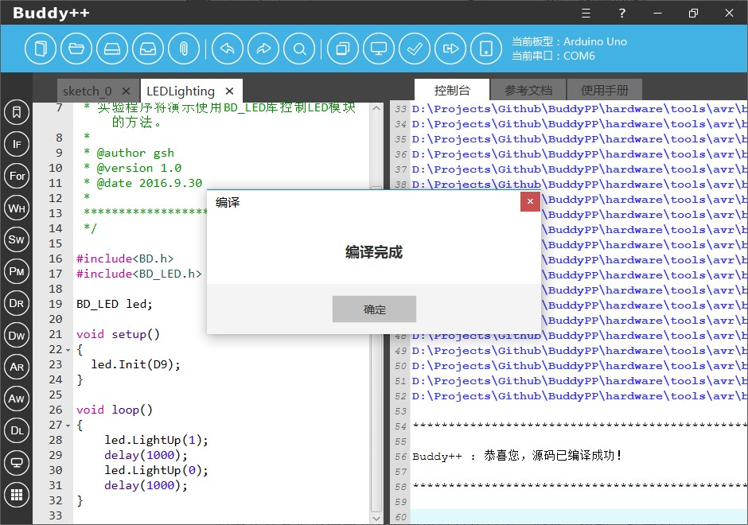
如果编译操作顺利完成，Buddy++将会弹出编译成功的对话框，否则将会弹出编译失败的对话框。如遇编译失败的情况，开发者可以细阅控制台输出的提示信息找出导致编译失败的具体原因。
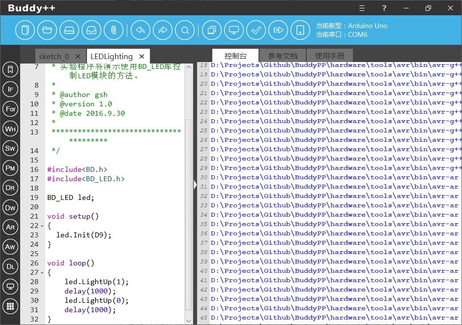
如果开发者希望提高开发效率可以直接点击“烧录”按钮，Buddy++将会先完成编译操作然后进行烧录操作。在进行烧录之前首先要保证程序已经成功编译，在编译之前开发者需要保证在预设值的时候选择了正确的主控板型号和串口序号，如果选择有误编译过程则有可能出现错误。
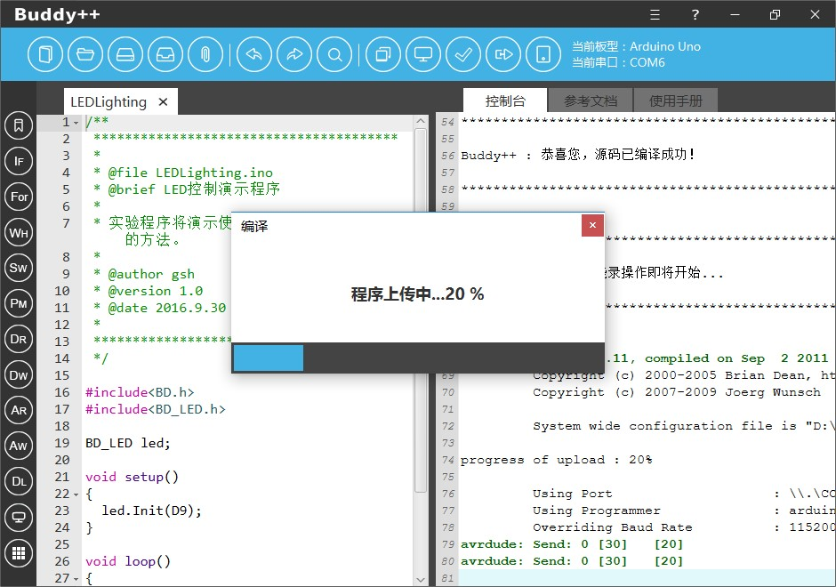
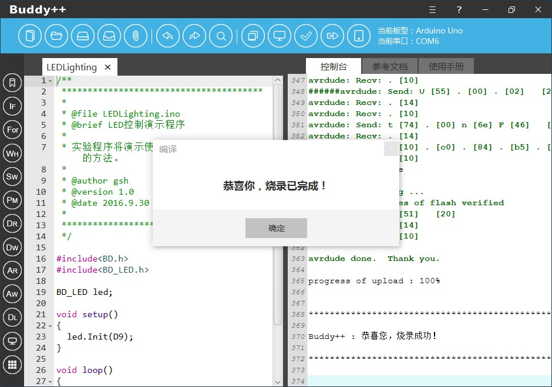
同样地当烧录工作开始时，右侧的信息栏会自动展开并激活控制台标签页。如果烧录操作顺利完成，Buddy++将会弹出烧录成功的对话框，否则将会弹出烧录失败的对话框。如遇烧录失败的情况，开发者可以细阅控制台输出的提示信息找出导致烧录失败的具体原因。
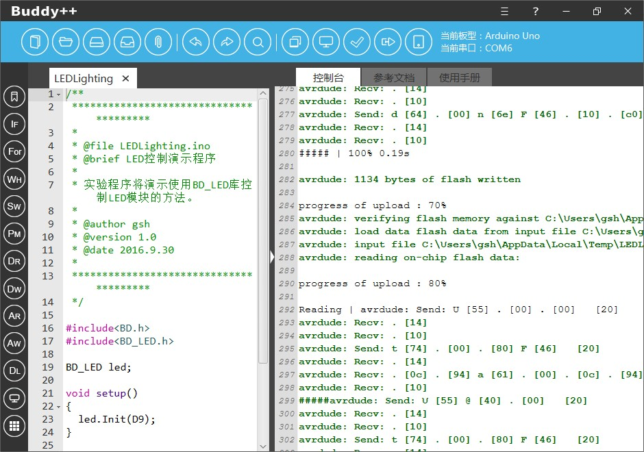
使用数据线把Arduino主控板连接到计算机后首先需要进行预设置，在预设值的对话框中开发者需要通过下拉菜单选择当前连接的主控板型号和当前连接串口的序号。
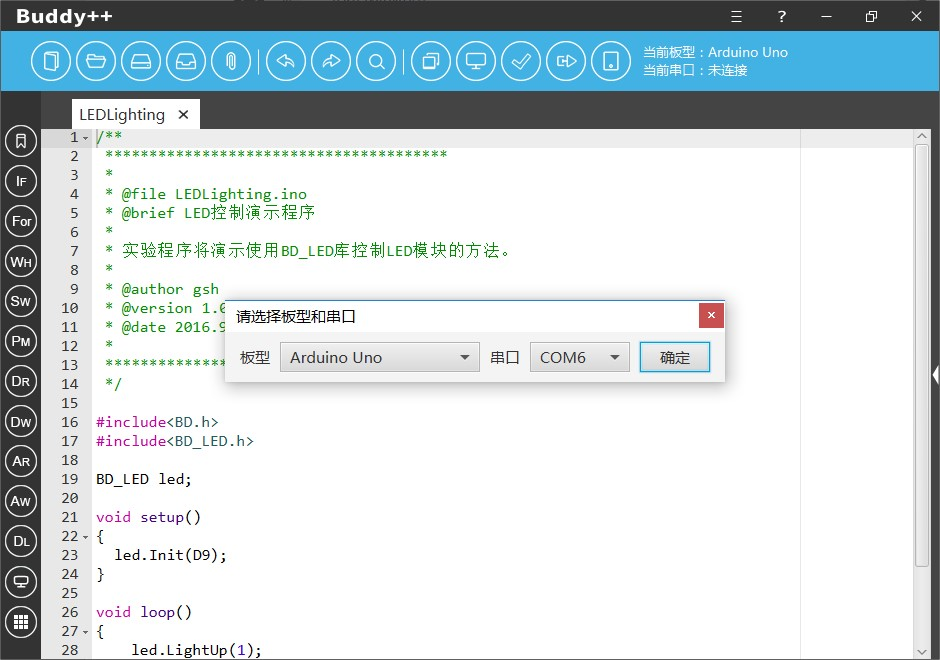
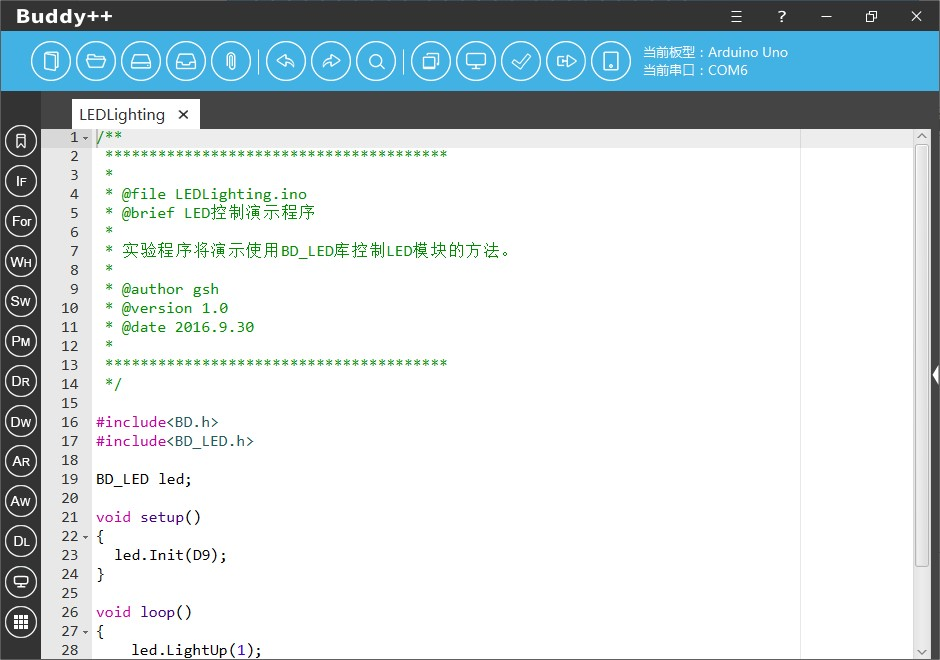